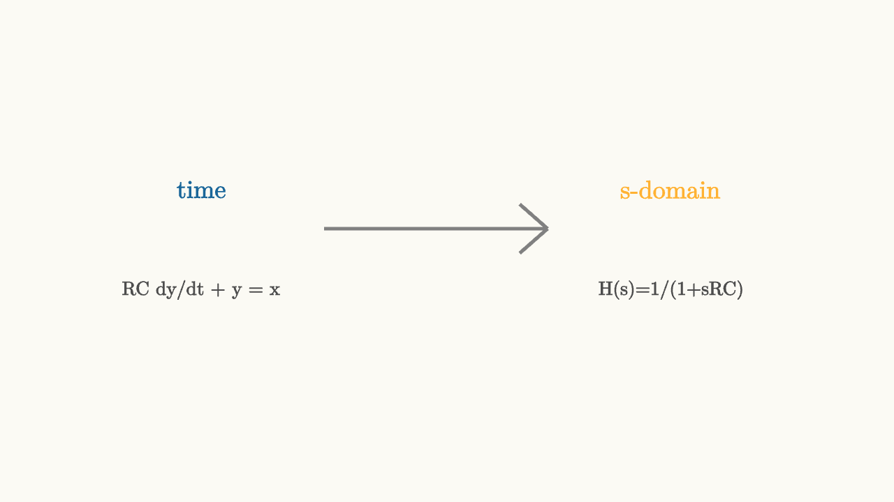

Laplace Turns Circuit Laws Into Algebra
Circuit equations often contain derivatives and integrals. The Laplace transform changes those operations into algebra in the variable $s$.
For a capacitor,
If the initial voltage is zero, the Laplace-domain relation is
The capacitor behaves like an impedance $1/(sC)$. The inductor behaves like $sL$. Resistors stay as $R$. With those three replacements, many dynamic circuits can be analyzed like resistor networks.

source
background = [0.985, 0.98, 0.955, 1]
camera = Camera(4b)
mesh diagram = block {
. center{[-2.2, 0.55, 0]} color{BLUE} Text("time", 0.82)
. center{[2.0, 0.55, 0]} color{ORANGE} Text("s-domain", 0.82)
. stroke{GRAY, 3} Line(start: [-1.1, 0.2, 0], end: [0.9, 0.2, 0])
. stroke{GRAY, 3} Line(start: [0.65, 0.42, 0], end: [0.9, 0.2, 0])
. stroke{GRAY, 3} Line(start: [0.65, -0.02, 0], end: [0.9, 0.2, 0])
. center{[-2.2, -0.35, 0]} color{DARK_GRAY} Text("RC dy/dt + y = x", 0.62)
. center{[2.0, -0.35, 0]} color{DARK_GRAY} Text("H(s)=1/(1+sRC)", 0.62)
}
"transform"
play Fade(0.6)For the RC low-pass circuit with zero initial voltage,
Taking the Laplace transform gives
Solving for output over input:
This ratio is the transfer function. It is the Laplace transform of the impulse response.
Poles describe natural behavior
The denominator $1+sRC$ vanishes at
That value is the pole. The pole is the natural decay rate of the circuit. It matches the exponential tail in the impulse response.
If a circuit has complex conjugate poles, it rings. If poles are far into the left half-plane, the response decays quickly. If a pole reaches the right half-plane, the ideal linear model grows without bound.
source
background = [0.985, 0.98, 0.955, 1]
camera = Camera(4b)
let Pole = |pos, col| block {
. stroke{col, 4} Line(start: pos + [-0.13, -0.13, 0], end: pos + [0.13, 0.13, 0])
. stroke{col, 4} Line(start: pos + [-0.13, 0.13, 0], end: pos + [0.13, -0.13, 0])
}
"slow pole"
mesh axes = block {
. stroke{GRAY, 1} Line(start: [-3, 0, 0], end: [3, 0, 0])
. stroke{GRAY, 1} Line(start: [0, -1.7, 0], end: [0, 1.7, 0])
. center{[2.55, -0.28, 0]} color{GRAY} Text("Re(s)", 0.62)
. center{[0.45, 1.45, 0]} color{GRAY} Text("Im(s)", 0.62)
}
mesh pole = Pole(pos: [-0.55, 0, 0], col: BLUE)
mesh note = center{[0, -1.35, 0]} color{DARK_GRAY} Text("farther left means faster decay", 0.62)
play Fade(0.6)
play Grow(0.6)
"faster pole"
pole = Pole(pos: [-1.75, 0, 0], col: ORANGE)
play Lerp(1.0)Initial conditions are inputs too
If the capacitor starts with voltage $v_0$, then
That extra term is how stored energy enters the algebra. A charged capacitor can produce output even when the external input is zero.
This is one reason Laplace analysis is so useful for switching circuits. At the moment a switch changes, capacitor voltages and inductor currents carry information from the previous circuit configuration. The new equation starts with those inherited values.
Zeros shape forced behavior
Poles describe the circuit's natural modes. Zeros describe input patterns that the circuit suppresses.
A high-pass RC circuit has transfer function
The zero at $s=0$ means DC is blocked. A constant input has no steady output after the capacitor charges. The same capacitor that passes sudden changes blocks long-term constant voltage.
The algebra keeps the physics
The $s$-domain can feel detached from wires and parts, but it preserves the circuit's physical content. Capacitors and inductors store energy. Resistors dissipate it. Sources inject it. Poles, zeros, and initial terms are the algebraic shadows of those facts.
Once you have $H(s)$, you can evaluate it on the imaginary axis to get Fourier frequency response. That step turns a transient tool into a filter tool.